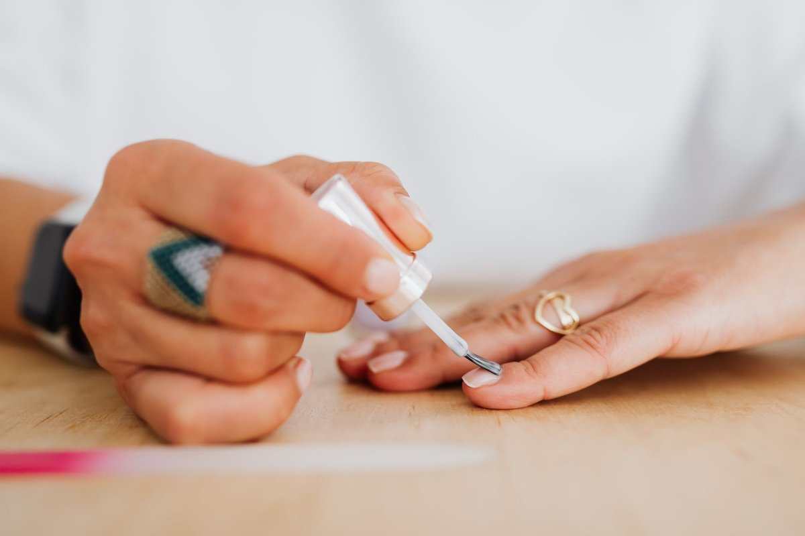

Stop Overcomplicating Your Gut Bacteria and Calorie Burn
Learn how your gut bacteria could be changing how many calories you absorb and simple, science-backed tweaks to balance
Read article →Practical guides on sleep, gut health, stress, and daily movement — written for real schedules, not lab conditions.
Learn how your gut bacteria could be changing how many calories you absorb and simple, science-backed tweaks to balance
Read article → healthy-habits
healthy-habitsDiscover why Scientists Reveal Why Some Workout Recovery Tricks Can Backfire and how to fix your post-gym routine for be
Read article →Wondering why don’t health insurers promote a healthier diet? Here is the real financial truth behind US healthcare plus
Read article → healthy-habits
healthy-habitsEating olive oil before carbs has a surprising effect on blood sugar. Learn how this simple olive oil trick curbs glucos
Read article →
Popular weight loss drugs linked to a surprising fingernail problem? Here is the real science behind brittle nails and how to fix them fast.
2026-10-12 · Read →See how just 7 days of strength training started shrinking fat cells in mice and what practical steps you can take today to kickstart metabo
2026-10-09 · Read →Taking antibiotics? Sugar may be making the damage worse inside your gut. Learn how refined carbs fuel dysbiosis and how to recover fast.
2026-10-09 · Read →Discover how Only One Workout Helped Older Adults Lose Fat And Keep Muscle while protecting joints and boosting metabolism naturally.
2026-10-09 · Read →